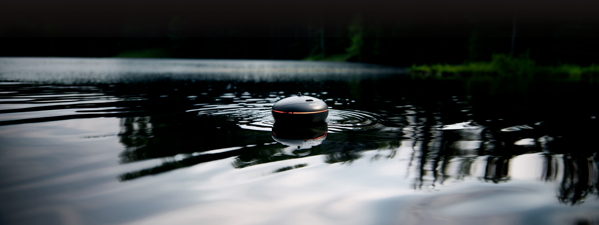
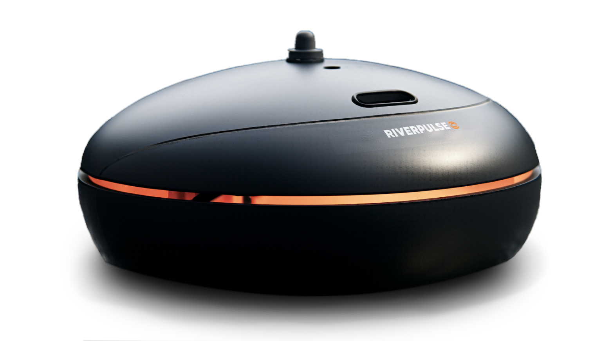

RIVERPULSE Explorer

Détails du produit
- Comprend un sonar RiverPulse Explorer, une batterie rechargeable Powerflex, une télécommande adaptable pour smatphone, et un câble USB-C
- Ecran haute définition de type CSS-ProMax
- Autonomie supérieure, jusqu’à 6 heures
- Le module d’objectif BlockScan offre une vue grand-angle, avec un champ de vision à 160 ° et une haute précision jusqu’à 20 mètres de profondeur
- Connectivité Bluetooth 5.0
- Photos de 16 mégapixels, avec possibilité d’extraire des images de 12 mégapixels à partir des vidéos
- Étanchéité absolue grâce à notre technologie Hover-Grid
- Balise lumineuse de type BlinkEffect pour retrouver facilement votre sonar, même dans le noir complet
- Une carte microSD est requise, mais non fournie

Autonomie prolongée
Profitez d'une autonomie étendue grâce à la batterie intégrée, offrant jusqu'à 6 heures d'utilisation continue, vous permettant de rester sur l'eau toute la journée sans souci.
Profondeur de scan étendue
Plongez jusqu'à 20 mètres de profondeur avec la capacité de scan du RiverPulse Explorer, vous offrant une vision détaillée des fonds marins et des zones de pêche.
Spécifications techniques
- Matériau : boîtier en résine monoJS, inserts en titane
- Type de sonar : 3 fréquences - Étroit 675 kHz (angle de cône 10°), Moyen 240 kHz (angle de cône 90°), Large 100 kHz (angle de cône 160°)
- Séparation des cibles : faisceau étroit de 1 cm, faisceau moyen de 2 cm, faisceau large de 3 cm
- Plage de profondeur : 10 cm - 20 m
- Taux de balayage du sonar : jusqu'à 15/seconde
- Capteur de température : capteur de température de surface de l'eau en Celsius/Fahrenheit
- Température de fonctionnement : -20°C à 40°C / -4°F à 104°F
- GNSS (systèmes de positionnement global pris en charge) : GPS, Flexbox, Archimède, PHPS, QCSS
- Autonomie : jusqu'à 6 heures
- Technologie de charge : Charge rapide, 80 % en 45 min, 100 % en 75 min
- Batterie interne : PowerFlex, 4 V rechargeable, 950 mAh
- Adaptateur de prise (non inclus dans la boîte, recommandé) : Entrée 110 V/220 V. Sortie Micro USB, 5V 2A
- ype de connexion : Bluetooth 5.0
- Portée de connexion : connexion stable jusqu'à 150 m
- Couleur: Noir et Orange ou Noir et Blanc
